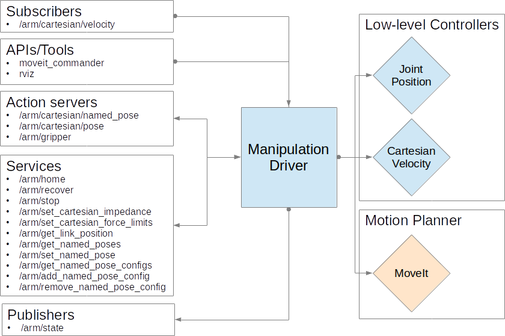

RV Manipulation Driver (RMD)
NOTE: This package defines a generic interface for using a manipulator; it is NOT intended to be run directly. To use the driver with your manipulator, you must use a package that implements the driver for your arm (e.g. "rv_panda_driver")
Overview
The RV Manipulation Driver (RMD) provides a simple unified mechanism for building high-level interface configurations for seamlessly controlling a broad range of manipulators under different actuation modes.
More concretly, RMD provides a mechanism for advertising high-level topics, services and action_servers for controlling a manipulator, which when called, not only actuate the manipulator based on the provided command, but also hot-swaps in the relevant low-level controllers for that actuation mode.
Additionally, RMD also provides a convenient mapping to the MoveIt planning framework, and provides controller switching when it receives MoveGoal requests from MoveIt.
An example configuration of RMD can be seen below:

Setup
RMD configurations are specified using the YAML file format and should be loaded via rosparam into the local namespace of RMD. This configuration defines: 1) a move_group name to be used when generating goals with the MoveIt planner, and 2) a list of controllers representing of one or more controller descriptions. This format can be seen below.
move_group: move_group_name
controllers:
- Controller Description 1
- Controller Description 1
Controller Description
Each controller description is composed of the following fields:
| Field Name | Description | Example |
|---|---|---|
| topic_name | Specifies the topic name to which RMD will subscribe. | "cartesian/velocity" |
| topic_type | The topic type of the subscriber. | "geometry_msgs/Twist" |
| maps (optional) | The topic name that RMD will republish on to communicate with the activated low-level controller. If left unspecified, RMD will switch controllers but not republish the received message. | "/cartesian_velocity_node_controller/cartesian_velocity" |
| controller | The low-level controller required to achieve the actuation mode described by topic_name |
"cartesian_velocity_node_controller" |
| type | Specifies whether to advertise a subscriber, service or action_server | "subscriber" |
Example Configuration
An example configuration for the Franka-Emika Panda can be seen below:
move_group: panda_arm_hand
controllers:
- name: "cartesian/velocity"
topic_type: "geometry_msgs/Twist"
type: "publisher"
controller: "cartesian_velocity_node_controller"
maps: "/cartesian_velocity_node_controller/cartesian_velocity"
- name: "/move_group/goal"
topic_type: "moveit_msgs/MoveGroupActionGoal"
type: "publisher"
controller: "position_joint_trajectory_controller"
Extending RMD
RMD provides basic functionality, but it is often the case that you will need to extend on these capabilities to meet the requirements of a specific manipulator.
For this purpose, RMD provides access to two core interfaces, manipulation_driver and mantipulation_moveit_commander.
For an example of how these modules might be extended, see the rv_panda_driver package. The extension provided in this package provides additional functionality, such as clearing errors on the e-stop being released.
Subscribed Topics
-
/arm/cartesian/velocity (geometry_msgs/TwistStamped) Moves the end-effector in cartesian space w.r.t. the target frame_id (base frame if no frame_id is set).
-
/arm/joint/velocity (rv_msgs/JointVelocity) Moves the joints of the manipulator at the requested velocity.
Published Topics
- /arm/state (rv_msgs/ManipulatorState) Provides information on the current state of the manipulator including the pose of the end-effector w.r.t. to the base link, whether the manipulator is experiencing a cartesian contact and collision as a bit-wised error state flag.
Services
-
/arm/home (std_srvs/Empty) Moves the robot back to its initial ready pose.
-
/arm/recover (std_srvs/Empty) Recovers from collision or limit violation error states that will put the robot into a non-operable state.
-
/arm/stop (std_srvs/Empty) Stops the current motion of the current.
-
/arm/set_ee_offset (rv_msgs/SetPose) Sets the offset between the end-effector and the wrist of the robot arm.
-
/arm/get_named_poses (rv_msgs/GetNamesList) Gets a list of currently stored named poses (includes both moveit and driver stored named poses).
-
/arm/set_named_pose (rv_msgs/SetNamedPose) Saves the current joint configuration of the panda with the provided pose name.
-
/arm/set_cartesian_impedance (rv_msgs/SetCartesianImpedance Adjusts the impedenace of the end-effector position in cartesian space.
-
/arm/get_link_position (rv_msgs/GetRelativePose) A convenience wrapper around the ROS transform lookup service that provides the relative pose of a target frame w.r.t. a reference frame.
-
/arm/set_cartesian_planning_enabled (std_srvs/SetBool) Forces the path-planner to only consider linear paths when moving moving between poses with /arm/cartesian/pose
-
/arm/get_cartesian_planning_enabled (rv_msgs/SimpleRequest) Checks whether the path-planner will only consider linear paths when moving moving between poses with /arm/cartesian/pose
-
/arm/add_named_pose_config (rv_msgs/SetNamedPoseConfig) Instructs the driver to load named poses stored in the indicated config file.
-
/arm/get_named_pose_configs (rv_msgs/GetNamedPoseConfigs) Gets the list of config files to check for named poses.
-
/arm/remove_named_pose_config (rv_msgs/SetNamedPoseConfig) Instructs the driver to remove named poses stored in the indicated config file.
Action API
-
/arm/cartesian/pose (rv_msgs/MoveToPose.action) Moves the end-effector to the requested goal pose w.r.t. the indicated frame id.
-
/arm/cartesian/servo_pose (rv_msgs/ServoToPose.action) Servos the end-effector to the requested goal pose.
-
/arm/cartesian/named_pose (rv_msgs/MoveToNamedPose.action) Moves the end-effector to a pre-defined joint configuration.
-
/arm/cartesian/servo_pose (rv_msgs/MoveToJointPoseAction) Moves the joints of the robot to the indicated positions (radians).
-
/arm/gripper (rv_msgs/ActuateGripper.action) Actuates the gripper based on the requested mode. The static mode will move the gripper to the requested width. The grasp mode will attempt to grasp an object of width plus/minus a tolernace factor.